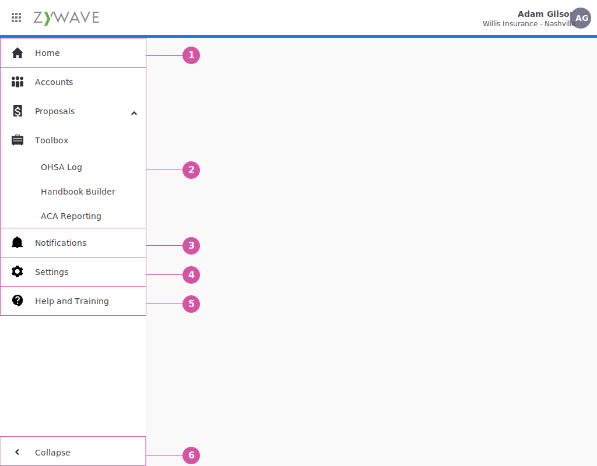
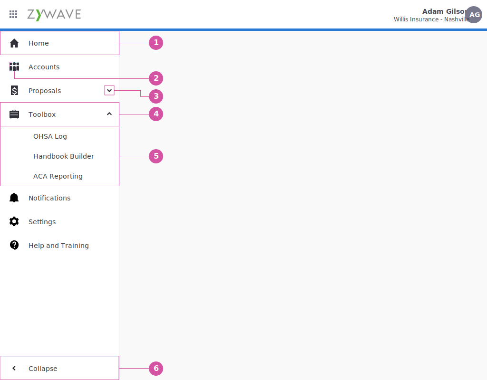
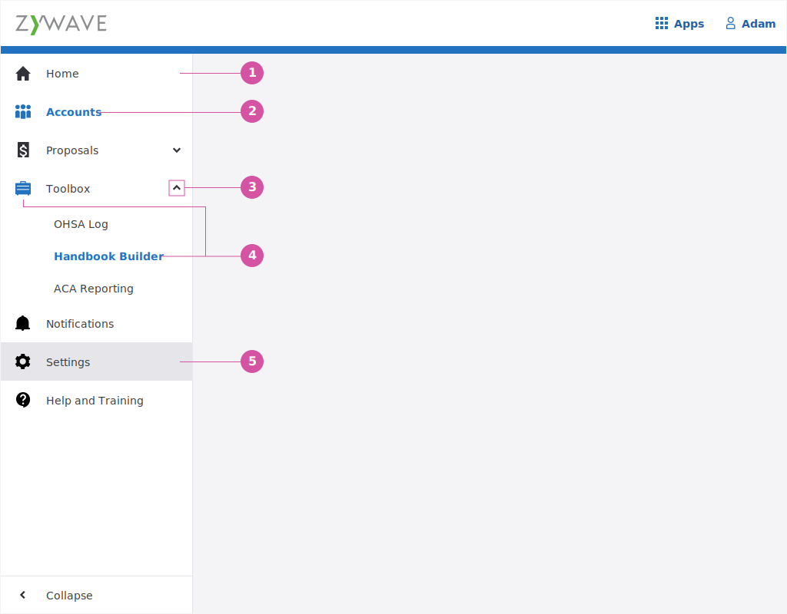
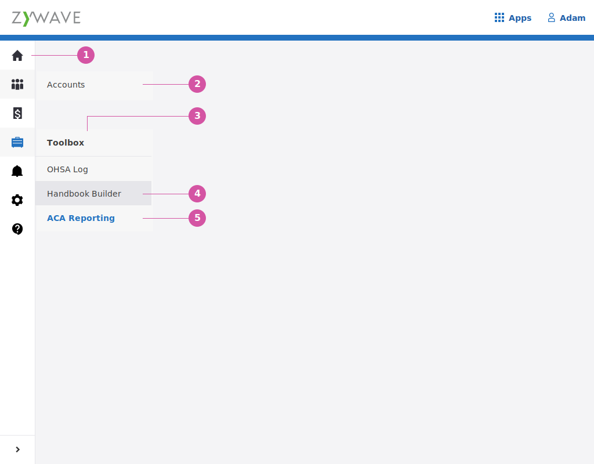
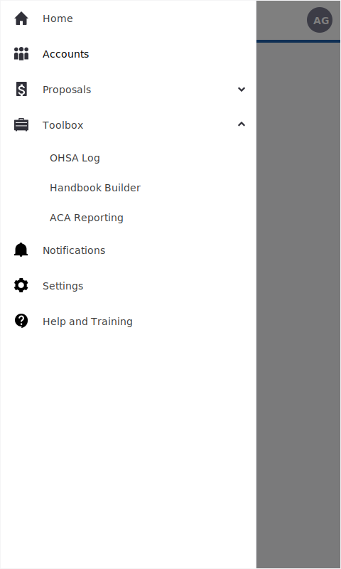

What is a Sidenav
The Side nav contains the majority of the application and suite level navigation. This includes the applications feature level nagivation as well as access to notifications, settings, and help and training.
When to use Sidenav
The side navigation is a base component of the Shell. Having the navigation in a standard and reliable place helps grounds the user experience of all our products, so there should be a good reason if you’re not going to use it.
What things go in the Sidenav
The following are nav items that are recommended for every application, when applicable.
- Home - Every application should start with a home link at the top. This takes you to the home page of whatever application you are in.
- Product navigation links - These are the application links take the user to the features they have access to.
- Notifications - Application specific notifications, when applicaable.
- Settings - Application specific settings, when applicable.
- Help and Training - Links to application specific help and Zywave University.
- Collapse - Gives the user the ability to collapse the Sidenav for more working space in the content area.

Sidenav anatomy
These are the building blocks of the Sidenav.
- Nav Item
- Nav Item Icon
- Expand Icon
- Nav Item (with children)
- Subnav Items
- Collapse action

Icon rules
- All top level nav items should have a corresponding icon to help quickly identify the action. These icons are also used when the menu is collapsed.
- Child items do not have an icons associate with them.
- For more information view our icon standards
The three states of Sidnav
- Expanded - At the breakpoint of ≥720 the full expanded side navigation are present.
- Collapsed - When the collapse button is pressed the menu will slim down to show only icons as main navigational items.
- Mobile - At the breakpoint of <720 the Sidenav is off screen and slides in from the left when the hamburger menu is pushed.
Behavior (expaned state)
- Unselected Navitem - Font color: grey-700; font weight: 400; icon color: gray-800; background color: none
- Selected Navitem - Font color: blue-500; font weight: 700; icon color: blue-500; background color: none
- Expand & collapse action icon - When clicked the icon rotates 180 degrees. The icon should always point the direction the action will happen.
- Selected subnav item - Font color: blue-500; font weight: 700; icon color: blue-500; background color: none
- Hover - background color: Gray-50

Parent and children
- When anywhere on a parent item is clicked, the children will appear below that parent item.
- Parent items are used only for organizational purposes to reveal their child subnav items, they aren’t linked to pages themselves.
- Parent items can all can be open at the same time to show all subnav item for the entire application.
- After a user clicks on a link, expanded navigation remains expanded. Don’t close the navigation until the user pushes to close it.
- When the list of expanded items extends the entire height of the view port, a small scrollbar appears, allowing the user to scroll the Sidenav.
- The collapse nav item remains stuck to the bottom and not part of the scrolling section.
Collapsing the Sidenav
- The user can collapse & expand the naviagtion by clicking the collapse button at the bottom of the Sidenav.
- When collapsed - The content area will respond and make more room for itself, taking up the area that the sidnav had been using.
- There is no need for the expand/collapse Sidenav function in the mobile state, so the button is hidden.
Behavior (collapsed state)
- Unselected Nav item - icon color: gray-800; background color: none
- Selected Nav item - Slideout shows the full name of the navigation item. The user can then click the icon or the text to navigate to this page. icon color: blue-500; background color: none
- Hover Nav item with children - Slideout shows the Nav item name and list of subnav items. The user can then select the page they wish to navigate to in the list. Background color: gray-50;
- Hover Subnav item - background color: Gray-100
- Selected item - Font color: blue-500; font weight: 700; background color: none

Behavior (mobile state)
- The menu slides in over the content. To close the side nav the user will click off to the right of the navigation.
- Apps & Profile navigational items that were in the topbar will now appear in the sidenav.

Sizing & Spacing
Use the following links to find exact pixel specs for each state of the Sidenav.